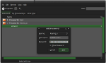
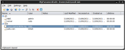
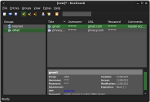
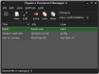

A Periodic Table of password managers
As was mentioned in the context of the Fedora Project's new password-selection rules, keeping track of the glut of "low-value" passwords that accumulate in daily web usage prompts many users to look into password-management applications. In theory, a password list saved to a file encrypted by a suitably strong algorithm beats a desk covered in sticky-notes or a single, re-used-everywhere password — provided that you remember the password that unlocks the password vault file itself. Not all such utilities are created equal, however, especially when you consider factors like usability and cross-platform compatibility.
Although this tour of password managers is limited just to those with a desktop Linux build, it is important to consider whether or not versions of the application exist for other OSes, so that you can have access to web site passwords when away from home base. These days, after all, the list of non-native OSes includes not just Windows and OS X, but mobile platforms like Android as well. It is also important to distinguish between the classes of secret information you need to store — some applications provide a simple scratchpad on which you can jot any username/password combination in plain text, while others attempt to manage OpenPGP and SSH keys as well, complete with key-signing, key lookup, and other related functionality.
The available options also vary in security-related features. Some provide a mechanism to create and manage multiple "password safes" at once, while others associate just a single safe with the active user account. The encryption algorithms used to lock the password safe are well-known and reliable, but some applications go out of their way to provide additional security through key strengthening techniques, such as hashing the original passphrase through multiple rounds (typically thousands of iterations, known as "key stretching") and/or applying a salt. Those techniques can make attacks against the password using rainbow tables or brute force more difficult or impossible. A few applications also make a point of using locked (with mlock()) memory, which prevents the kernel from swapping pages containing cleartext passwords out to disk where those passwords could be recovered by an attacker.
The noble desktop-environment natives
GNOME and KDE both provide an "official" GUI application for managing keys and passwords, each of which is a front-end to the environment's built-in key-management service. GNOME's offering is Seahorse, which serves as a front-end to GNOME Keyring, and KDE's is KWalletManager, a front-end for KWallet. Naturally, each inherits core functionality like the vault-encryption algorithm from its respective back-end service.

Seahorse and GNOME Keyring use AES-128 to encrypt the password safe, with a salt and multiple hash iterations applied to the password, and use locked memory. Seahorse separates your managed "secrets" into three tabs: one for passwords, one for your personal OpenPGP and SSH keys, and one for the public keys you have collected for others. You can create multiple "password keyrings" (as Seahorse calls them) while in the password tab, though Seahorse will continue to collect automatically-saved passwords (such as those used by online services integrated with GNOME) in the default password keyring. There is not a facility to export a password keyring to an external file, and Seahorse can only import raw keys (as opposed to encrypted files produced by other applications).
KWallet and KWalletManager use the Blowfish algorithm to encrypt the password safe. The safe's password is put through multiple hash rounds, although I have not found a clear description of either salting or locked memory usage. KWallet's approach to managing your secrets collection is different — whereas GNOME Keyring allows you to create separate "password keyrings" that are distinct from the collection of encryption keys, KWallet allows you to create separate "wallets," each of which can contain several types of credentials (passwords included). It, too, does not include functionality for exporting a password safe to an external file or importing the password safes of other applications.
The Schneier-ides
Security guru Bruce Schneier developed his own password safe application — for Windows only — called simply Password Safe, which currently sits at version 3.26. The Windows-only nature of the project has prompted several independent attempts to duplicate its functionality (with file-format compatibility) on other OSes.

MyPasswordSafe is a Qt-based Password Safe work-alike designed to run on Linux desktops. The last formal release was in 2004, however the project has migrated to Github, and there have been sporadic commits to the code as recently as early 2011. MyPasswordSafe uses Blowfish to encrypt the password safe, but the FAQ makes a point of playing down any other security features (including explicit mention that locked memory is unsupported). On the other hand it does provide a feature to copy passwords to the clipboard, and then automatically clear the clipboard after the password has been pasted. The application supports the creation of multiple safes. Like the original Password Safe, it implements password storage only, but allows you to associate each saved password with a title, username, and text notes.
Password Gorilla is another clone of Schneier's application, which uses Tcl/Tk for its GUI, and is still in active development. It supports Linux, Windows, and Mac OS X, and claims to maintain compatibility with the current 3.2-series of Password Safe, something that might be problematic for the older MyPasswordSafe. Multiple password safes are supported, encrypted by the Twofish algorithm, and protected by key stretching. As is the case with MyPasswordSafe, only password storage is implemented, and using the same schema. Password Gorilla can export a password safe as a plain (unencrypted) text file, and can open safes created in Password Safe or MyPasswordSafe.
There are several projects implementing Password Safe-compatible functions for the major mobile device OSes, some of which are open source. Passwd Safe is an Android application, and pwSafe is an app for iOS. Both support multiple password safes, and are under active development. PwSafe uses Twofish to encrypt the password safes, and salts and stretches the key.
The KeePass series
KeePass is another password manager that originated on Windows. Like Schneier's work, it was open source. However, when the project undertook a rewrite for version 2.0, it switched to Microsoft's .NET application framework, adopted several Windows APIs, and changed its file format. The project has continued to release updates for both the 1.x and 2.x series. Although it is possible to make KeePass 2.x run using the Mono implementation of .NET — with some effort — the rewrite has largely isolated the Windows code base from other platforms.
A friendly (at least, friendly enough to be linked to from the KeePass site) fork of the code called KeePassX has continued development from the 1.x branch, simultaneously supporting Linux, OS X, and Windows. KeePassX sports more flexibility than many of the other password managers; it can use either AES or Twofish to encrypt password safes, and can incorporate other authentication mechanisms, such as the presence of a "key file" in addition to a password. The original KeePass application used protected memory, password salting, and key stretching; KeePassX forum users routinely point those asking questions to the KeePass documentation, which suggests that those features have not faded away, though KeePassX does not make any representations to that effect. For file format compatibility, KeePassX would need to preserve the same password-hashing scheme, of course, but locked memory (particularly on non-Windows OSes) is another story.

Feature-wise, KeePassX supports multiple password safes, and within each safe allows you to create named groups of saved passwords. Two are provided by default with new safes, "Internet" and "Email." Each password entry comes with several associated fields: Title, Username, URL, the password itself, Comments, an optional expiration date, an icon, and optional file attachments. KeePassX can import password safes from most other password managers, including the Schneier Password Safe and its clones and KWallet's internal XML format. Individuals have posted instructions for converting other password manager files to the forums. KeePassX can export its safes to plain text or unencrypted XML.
There are also unofficial KeePass "ports" to popular mobile platforms, including Android and iOS. The Android application KeePassDroid is open source, as is one of the iOS apps, iKeePass.
The rest
Several password managers are still available through the major distribution's repositories, even though they are no longer actively developed. Of note are Revelation and Figaro's Password Manager (FPM), both written for GNOME.
Revelation focused on password safes, but could open other encrypted files, including those encrypted with LUKS. It could import password safes from several other applications, including Password Safe, and could export safes to many of the same formats in addition to unencrypted XML. It used AES-256 to encrypt the safe, with the password salted and iteratively hashed. Within each password safe, it supported ten specific "secret" types, each of which had its own combination of database fields: phone, credit card, cryptographic key, shell account, FTP account, email, web site, database, door lock code, and generic. You could create folders within each safe to further group your passwords. Revelation ceased development in 2007.
In addition to the standard password safe feature set, FPM added the ability to launch applications by clicking on an entry in the password list — primarily a web browser, but user-configurable for any executable, on a per-password basis. It also supported copying saved passwords to either the system clipboard or to the X primary selection (so that they could be pasted with a middle-click). FPM protected the password safe with Blowfish, and used locked memory. It supported multiple safes, and could import safes from several other applications of the same age.

Although FPM's last release was in 2003, another developer independently started a fork called FPM2, which is still undergoing active development. The basic feature set is the same, but it adds several enhancements. First, it encrypts the safe with AES-256, and adds key stretching for additional protection. It also allows you to assign a "category" text label to each saved password, and extends the "launcher" concept. FPM2 launchers can be configured to pass other arguments (such as hostname or username) from each saved entry to the launched application. It can also launch a URL in the browser, and at the same time copy the associated username to the clipboard and the password to the primary selection.
Pick your poison
These days, all of the actively-maintained password managers offer rough parity on the security of stored password safe — at least on the Linux desktop. A bigger question is whether or not the existence of compatible applications for your mobile device is important, since, depending on the device, you may not be able to assess the security risks inherent in that platform. Using a mobile client also supposes that the password safe is retrievable, so it must either be stored in a location accessible from the Internet, or be periodically synchronized between the PC and device.
For a casual user, the built-in password managers supplied by GNOME and KDE are probably sufficient, considering that they are already used to manage OpenPGP, SSH, and other credentials. The Schneier and KeePass families primarily offer better cross-OS support and usability niceties (such as extended data fields for each password entry and import/export for other formats). Whether or not you can make use of those features, of course, depends largely on the number of passwords you are required to juggle and how many machines you need to use.
| Index entries for this article | |
|---|---|
| Security | Authentication |
| Security | Passwords |
| GuestArticles | Willis, Nathan |
Posted Nov 10, 2011 2:18 UTC (Thu)
by cventers (guest, #31465)
[Link]
Posted Nov 10, 2011 3:53 UTC (Thu)
by mdeslaur (subscriber, #55004)
[Link]
It's written in python, for Gnome, and uses a Password Safe 3.0 compatible database.
Posted Nov 10, 2011 9:11 UTC (Thu)
by danielpf (guest, #4723)
[Link] (17 responses)
Posted Nov 10, 2011 10:03 UTC (Thu)
by mpr22 (subscriber, #60784)
[Link] (9 responses)
Posted Nov 10, 2011 11:22 UTC (Thu)
by danielpf (guest, #4723)
[Link] (8 responses)
Say one could use a plain text file, or perhaps use a password manager
In any case methods for storing static passwords do not help against
Posted Nov 10, 2011 16:37 UTC (Thu)
by drag (guest, #31333)
[Link] (5 responses)
That way is completely and 100% totally impervious to all remote attackers.
The brain makes a notorious poor place to store passwords. It has very limited store, high levels of data corruption, and performance/recall limitations. It's a highly optimized storage medium not well suited to arbitrary strings.
Posted Nov 10, 2011 19:30 UTC (Thu)
by danielpf (guest, #4723)
[Link] (4 responses)
So a minimally functioning brain can be assumed.
Now what is required to the brain is not much more elaborated than that.
Posted Nov 11, 2011 4:17 UTC (Fri)
by drag (guest, #31333)
[Link] (3 responses)
I doesn't matter how functional your brain is, it sucks at remembering arbitrary strings. Unless you are some sort of idiot savant.
> Now what is required to the brain is not much more elaborated than that.
No what is required for the brain is to do something it's not designed for.
> From the list of partial passwords, say written on paper, but not necessarily, you modify the partial passwords with a simple rule, like:
None of that is very good, actually.
I have 5 sets of passwords I need to memorize for work.
and a few other dozens websites I use for various reasons. A lot of them I very rarely use, but when I need to use them it's somewhat important.
You tell me you can memorize all these and keep them straight by just swapping out pet names or doing random 3 letter word combinations. I have probably about 30 different passwords that need to be kept track of. A average person who uses the internet for bills and social media stuff probably has at least 15 accounts they need to keep track of.
What you are suggesting is all incredibly bad advice that will lead to a forgotten passwords, lots of password recoveries, lots of phone calls to the help desk at work. People will invariably choose to use shorter and simpler passwords and using the same passwords over and over again. Even if they are smart and try to use a good policy it will just end up punishing them and pushing them towards bad password management habits.
This sort of really bad advice that is repeated over and over again is exactly why people get their crap broken into. This contributed to why Debian got hacked. Fedora got hacked. Kernel.org got hacked. This is why people were able to gain access to source code repositories and key signing servers and all sorts of sensitive places like that. 90 times out of a 100 it is not a software vulnerability; it's because some goofball used a password to access a system that was hacked or should not of been trusted and they used the same password, or variation of it, on something that was actually important or their own workstation (and allowed ssh access from the internet).
People _should_
Trying to keep that straight in your head is very counter productive. It's better to not even try. Once you give up the need to try to memorize passwords then using proper passwords is massively easier.
> """able to remember that you wrote down the passwords on the pad of paper"""
Now compare all that to something that humans are actually very good at like:
"Were did I leave my wallet?"
If you don't know these then it's very easy to find out answers relatively quickly with usually minimal work.
Now if you don't use your online bank account but once every 3 or 4 months to check your balance... what are the chances you'll be able to recall a password that is _actually_secure_?
I understand a paper pad is not suitable for all purposes and is vulnerable to theft. Password managers are almost as good.
For Linux users something that is simple would be a LUKS encrypted USB key or something like that to store a text file of passwords or something like that. Real password managers are probably better, as long as you know how they function and keep their 'vaults' backed up to multiple systems. Encrypted files generally can be trusted so even if you back your password vaults up to insecure systems, you will be OK as long as you don't actually try to access their contents on those systems.
Some websites I use crap passwords because I am lazy. This is very hard to avoid.
But when I am doing good I always use passwords like this:
wee4eev1zaej,ah7EiCh
That is randomly generated stuff by using the 'pwgen' command, because creating new passwords is irritating and time consuming. In this case it was "pwgen -c1y 20 10" When I feel like being paranoid I won't even trust pwgen output.
For passwords that I need to recall on a continious basis, which is about 2-3 that I absolutely use on a daily basis I can memorize something strings like above. After using a password like that for a few weeks in situations were I must use it over and over and over again I can actually recall it much better using muscle memory then I can with just thinking about it. It's a bit silly feeling to have to sit down and close my eyes and type a password out to gedit to be able to recover it, but it is not atypical.
But lately I've been basing passwords on random strings of english words that end up about 20-30 characters long, for passwords I must use very often. No intentional mispellings or '7331' speak or any of that nonsense. They take a long time to type out, but accuracy increased massively and now I have to make less phone calls to unlock my accounts. For commonly used passwords changing them every month or two is critical.
(by-the-way: password lock-out policies are asinine. It amazes me that they don't understand that a person with simple shell script and a list of usernames can trivially perform a DOS attack on any major corporation that uses a password lock-out policy.. So irritating.)
Posted Nov 12, 2011 3:34 UTC (Sat)
by djao (guest, #4263)
[Link]
You have about 30 different passwords to keep track of. That's about average. You seem to be in favor of writing them down, whether on a pad of paper or in a password manager. That's quite understandable.
The problem is that, if someone malicious gets that piece of paper or breaks into your password manager, then they have EVERYTHING. The proposed countermeasure is to apply a single, simple, fixed, easy to remember, and easily reversible transformation to each password in your list. In other words, what you write down in your list is not your "real" password. Instead your real password is some simple (always the same) variation upon what is written down.
You would not write down the details of what this transformation is. You have to remember it in your head. But you only have to remember this one single simple rule. The argument is that remembering this one thing is not much harder than remembering the passphrase to your password manager, or the location of your paper pad. The benefit is that if an adversary succeeds in obtaining your list of passwords, they don't automatically get everything.
Nobody is suggesting that you memorize 30 different passwords or 30 different rules.
Posted Nov 12, 2011 22:00 UTC (Sat)
by mgedmin (guest, #34497)
[Link] (1 responses)
Posted Nov 17, 2011 15:04 UTC (Thu)
by mmendez (subscriber, #81435)
[Link]
So the password is never stored in any format. If someone were to grab the password configuration they would still need to know your 'master password', which being a single/often used password should be easy to remember even if it is complex.
Posted Nov 11, 2011 15:46 UTC (Fri)
by mjthayer (guest, #39183)
[Link] (1 responses)
A colleague of mine just suggested a variant on this scheme: a tool which combines a password with an additional word to (deterministically) generate a new password. E.g. you combine your master password with the word "paypal" (using the word "paypal" as salt if you like) and get a unique password based on that.
Posted Nov 14, 2011 13:17 UTC (Mon)
by vivi48 (guest, #6412)
[Link]
Posted Nov 10, 2011 10:45 UTC (Thu)
by Cato (guest, #7643)
[Link] (6 responses)
If you still want obscurity, how about modifying the source of one of these tools to replace common strings with something random, including filenames used? It won't do much good but you could then have more assurance that this obscure one is still more secure against brute forcing.
Attacks using GPUs and FPGAs for brute forcing are getting very cheap indeed (hundreds to thousands of dollars) so it is worth using proper salting and stretching (iterated hashing) of passwords to protect against brute forcing.
I think the biggest vulnerability for Linux desktop users is (a) any copies of the password manager's encrypted DB file on non-"Linux classic" OSs, particularly Windows or Android, and (b) web app passwords being stolen via SQL injection and other web server attacks. I would protect against the former by mandating two-factor authentication on all platforms (LastPass using Yubikey or Google Authenticator is one example) and against the latter by using a password manager.
Posted Nov 10, 2011 11:36 UTC (Thu)
by danielpf (guest, #4723)
[Link] (5 responses)
No, the best protection is not storing the whole information on the same computer. It is not obscurity, it is a physical barrier.
But such methods as well as password managers do not hold against keyloggers.
Posted Nov 10, 2011 17:25 UTC (Thu)
by drag (guest, #31333)
[Link] (4 responses)
If a attacker is present on your machine and can access your account there really is no method that is really useful. Any password you use is a password they can get.
Posted Nov 10, 2011 19:40 UTC (Thu)
by danielpf (guest, #4723)
[Link] (1 responses)
A keylogger can be a device hidden on the keyboard cable and broadcasting every single key.
Such situations do not need an attacker present on the machine.
Posted Nov 10, 2011 20:44 UTC (Thu)
by felixfix (subscriber, #242)
[Link]
Posted Nov 11, 2011 13:01 UTC (Fri)
by Cato (guest, #7643)
[Link] (1 responses)
LastPass is a good password manager (free as in beer for desktop OSs, paid-for on mobiles) which now includes Google Authenticator support and has some other two-factor options (grids, biometrics, and Yubikey). See http://lastpass.com/
Although LastPass has the weakness of a cloud-based point of attack, the two-factor options make it more secure against keyloggers than the password managers listed here. It's still vulnerable to a targetted attack against the LastPass client plugin, but that's true of almost any authentication technique.
Posted Nov 12, 2011 0:21 UTC (Sat)
by drag (guest, #31333)
[Link]
The main danger then changes from password stealing to session hijacking.
Posted Nov 10, 2011 9:22 UTC (Thu)
by ptman (subscriber, #57271)
[Link] (1 responses)
Posted Nov 10, 2011 16:42 UTC (Thu)
by sciurus (guest, #58832)
[Link]
Posted Nov 10, 2011 9:37 UTC (Thu)
by philipstorry (subscriber, #45926)
[Link] (2 responses)
I chose to use an app not mentioned here - Debian/Ubuntu have a package called pwsafe (not to be confused with the iOS app mentioned here!), which uses version 1.x/2.x password safe databases of the Schneier school.
It's command-line only, which suits me.
I did install Password Gorilla as well, but that's mostly just for editing - in case I add or remove something to the wrong category, for example. Most password retrieval I do from the CLI, and most adding too.
I did consider the fancy all-singing all-dancing cloud solutions, but none seemed to support Linux very well.
And frankly, how hard is it to sync one file via Dropbox/Ubuntu One/SpiderOak/$YourPoison?
That the file format is well understood and can be read on most platforms was really my main concern. Finding Passwd Safe on Android was the icing on the cake - now I have access to my password safe on my phone if I need it, which is great.
Pretty interfaces and functionality are nice. As a Gnome user, I do of course use Seahorse/Gnome Keyring to record some passwords for applications. But that's a convenience, not my "primary place of record".
Whatever you choose, make sure you can access it from wherever you need to. Being able to access something via a bad interface when you need it trumps not being able to access it at all...
Posted Nov 12, 2011 22:11 UTC (Sat)
by mgedmin (guest, #34497)
[Link] (1 responses)
My smartphone until very recently was the Nokia N900. There was a Schneiderian clone called PasswordSafe that worked rather well (the only two bugs were a missing icon and a non-functional export).
I've tried to import my pwsafe database into Revelation, which claims support for it, but the import failed silently.
I'm now looking for a solution that would support both Ubuntu and the Nokia N9, and, ideally support the same format.
Posted Nov 13, 2011 12:02 UTC (Sun)
by philipstorry (subscriber, #45926)
[Link]
I guess I have three options:
Luckily, having picked a format that's widely supported, three is at least an easy interim option until I can decide whether I want to do 1 or 2...
Good luck finding something to solve your problem.
Posted Nov 10, 2011 10:47 UTC (Thu)
by Cato (guest, #7643)
[Link]
Posted Nov 10, 2011 11:32 UTC (Thu)
by asymptote (guest, #75083)
[Link] (1 responses)
Let's face reality - you need a password manager. I have 20+ accounts that I use on a regular basis, and they all need distinct password in case a particular site gets compromised and doesn't have a solid password storage policy. This is the world we live in - security through obscurity can't win.
Posted Nov 10, 2011 22:33 UTC (Thu)
by Tet (subscriber, #5433)
[Link]
You might need one. I seem to manage without one.
Posted Nov 10, 2011 21:57 UTC (Thu)
by Per_Bothner (subscriber, #7375)
[Link] (2 responses)
A large fraction of the passwords most of us use a for web sites.
And of course most browsers have their own password-managers.
Ideally, one would like to set the browser's password manager to use an external general-purpose password-manager. Or a browser password-manager that can be more general-purpose (which includes import and export). For example I know that keepass has tolerable browser-integration, but it's not as nice as the browser's native password manager, so most people will prefer the latter.
I didn't notice anything in the article or comments about this important usability aspect.
Any comments or recommendations?
Posted Nov 11, 2011 3:38 UTC (Fri)
by linuxturtle (guest, #35652)
[Link] (1 responses)
Posted Nov 14, 2011 14:10 UTC (Mon)
by sorpigal (subscriber, #36106)
[Link]
Ultimately the solution to this has got to be a FOSS online password manager with a slew of nice features (two factor auth, various integration, etc) so that I don't have to trust a third party host and get a network-accessible password safe.
Posted Nov 10, 2011 22:40 UTC (Thu)
by bferrell (subscriber, #624)
[Link]
I have to constant re-build it for my distros but I've been using it since 2002
Posted Nov 11, 2011 8:16 UTC (Fri)
by tpo (subscriber, #25713)
[Link] (3 responses)
The article spends a lot of time looking at how each password manager encrypts its data. I couldn't care less. The only question that's important to me in that respect is: are the passwords processed and saved safely? That's it.
Usability, which determines, whether you use the programm or not, whether you use it safely, whether it is in your way or smoothely supports your usage pattern is completely untouched.
A few anecdotical examples:
* kwallet is practically unusable with keys only. You have to lift your hand and click and click and click... Considering that I have to enter passwords to all kinds of web applications all the time, selecting and pasting a username/password should be as quick and painless as possible, since entering passwords adds no value to the creative process.
* once upon a time kwallet was integrated with konqueror, which meant that it automatically detected when the page prompted you for a password and asked you whether it should automatically fill in the data. What a breeze. That feature was AFAIK dropped a long, long time ago in the name of syncing with Gnome (AFAIR) and never picked up again. Anyhow, kwallet has never supported neither firefox nor gnome...
* does the password manager work as an applet or does it clutter your desktop.
* what about supporting automatic password generation on demand? As allready said, there's no value in switching to the command line and typing mkpasswd or similar, then copying the password back etc.
* what about also generating some random email address and registering that with your mailserver for those thousands of web sites that also want your email address?
* Gnome keeps on asking me regularily "some application wants to access your keyring, please enter your password", without mentioning why, what application, what keyring or whatever (usually it's Network Manager AFAIK). This perverts the whole security concept if you don't have a clue who's asking why for your password and it should be trivial for an attacker to just launch the same dialog in the right instant and grab your master password.
* etc. etc. etc.
This critique here could come across too harsh. The point is that the article's focus is from a perspective that is only partly relevant and omits to discuss a central problem topic (the main reason why GUI apps exist actually).
Posted Nov 11, 2011 20:24 UTC (Fri)
by daglwn (guest, #65432)
[Link]
> Gnome keeps on asking me regularily "some application wants to access your
KWallet does the same thing. All that work to make things secure and then...this.
Posted Nov 11, 2011 20:41 UTC (Fri)
by asherringham (guest, #33251)
[Link]
Posted Nov 15, 2011 19:06 UTC (Tue)
by morhippo (guest, #334)
[Link]
Posted Nov 11, 2011 23:11 UTC (Fri)
by brian (subscriber, #6517)
[Link] (3 responses)
Posted Nov 13, 2011 20:55 UTC (Sun)
by idupree (guest, #71169)
[Link] (2 responses)
set nobackup
I suspect noswapfile isn't needed if the announcement I just looked up is correct [1], but without set viminfo= I definitely got information leaks into ~/.viminfo , even though the tutorial Google found [2] fails to mention that. Has anyone thoroughly examined vim to give us a way to confidently use vim encryption securely?
But on the plus side, I predict this Vim feature will still be here in ten years, and I have no confidence that the popular GUI password-specific programs will be the same ones by then...
[1] https://groups.google.com/group/vim_announce/browse_threa... linked from vim.org, except that Google claims that vim-announce violated its TOS rather than showing me the message (?!) so I found something on archive.org that looks like it's the announcement, http://web.archive.org/web/20110103012145/https://groups....
[2] http://www.techrepublic.com/blog/security/vim-offers-stro...
Posted Nov 15, 2011 10:06 UTC (Tue)
by ebirdie (guest, #512)
[Link]
It does set all the above options except nowritebackup, I just checked.
Posted Nov 12, 2011 12:11 UTC (Sat)
by juhah (subscriber, #32930)
[Link]
For additional security a physical barrier can be used in form of a codebook, for example. A simple laminated piece of paper which can fit into wallet will usually do fine. This will give some leeway if the encrypted file gets compromised.
Simple encrypted text file with entries like this:
Posted Nov 17, 2011 7:23 UTC (Thu)
by CycoJ (guest, #70454)
[Link]
The Linux Beta version has also been updated to 0.7, and is available for Debian and Ubuntu distributions, as well as in source form.
Unfortunately it does not run on 64bit yet.
Posted Nov 22, 2011 23:15 UTC (Tue)
by dag- (guest, #30207)
[Link]
Posted Aug 20, 2016 11:57 UTC (Sat)
by georg.s (guest, #110733)
[Link] (1 responses)
Especially, `pass' ('the standard unix password manager' https://www.passwordstore.org/ ), seems to be worth to be considered in a new overview article.
Posted Aug 21, 2016 19:01 UTC (Sun)
by flussence (guest, #85566)
[Link]
I recently began using KeePassX because there's another program called kpcli which lets you access your KeePass database from the command line -- very useful over SSH!
KeePassX and kpcli
A Periodic Table of password managers
A Periodic Table of password managers
The "not be popular" requirement tends to imply by extension that everyone should write their own from scratch (what, you expect people to keep quiet about effective software?).
A Periodic Table of password managers
A Periodic Table of password managers
a password manager doesn't really need to be written.
to fool an intruder, but each password would be stored only in part,
or in an altered form. Algorithms, or added information from one or
several separate sources would provide the missing information.
keyloggers.
A Periodic Table of password managers
A Periodic Table of password managers
From the list of partial passwords, say written on paper, but not necessarily, you modify the partial passwords with a simple rule, like:
- adding your pet name to the written down partial passwords (not very good actually), better
- replacing the last 3 characters with the next ones in the alphabet, or
- swapping the odd and even positioned characters,
- etc.
Something sufficiently simple but personal your brain will keep with quasi certainty. Something also that doesn't reveal some obvious structure in the password in case someone has access to a full password (thus the pet name addition is not very good on this regard).
A Periodic Table of password managers
> - adding your pet name to the written down partial passwords (not very good actually), better
> - replacing the last 3 characters with the next ones in the alphabet, or
> - swapping the odd and even positioned characters,
> - etc.
I need a unique password for each website I need account for. That is probably about 10 or 15 different websites.
They include:
My bank
My mortgage company
My house insurance company
My car insurance company
My credit card
Power company
The power company for my rental
The water and sewage company for my house
The water and sewage company for my rental.
this website
gmail
some other websites.
- Use unique passwords, _always_.
- Use very long passwords. Minimal 8 letters. Better of with 16, better off with 32, etc.
- Use random passwords.
- Passwords not based on favorite names or important dates or favorite teams, etc
- Passwords NOT based on words or misspelling of words. Swapping around letters is NOT useful. Substituting special characters for letters is NOT useful. Tacking on numbers to the end of words is NOT useful. These increase the difficulty of accurately remembering passwords massively while at the same time only trivially more difficult for a attacker to brute force or guess.
"Were are my car keys?"
"Which drawer in my desk did I leave my password book in?"
qui0hoh7OHaa<g1aetae
dae\Pae9aengo7OoPia:
wieYooNgoa1aijee[Gie
il2Sie2Jie1aevoh$soo
Xith7iez5ca,uf4eephu
za'es1ki5ooSh1xie1va
Aexu5ji{h1ahdahpo2ti
athae4Cemae9zoh+hiev
aQuia!xie5lef{i0Ooth
A Periodic Table of password managers
Diceware is good for generating random but easy to remember passphrases. It's basically a world list with some instructions about picking up a number of words by using physical dice as a random number generator, and some calculations how many words you need for a given password strength.
A Periodic Table of password managers
A Periodic Table of password managers
A Periodic Table of password managers
A Periodic Table of password managers
see for instance: http://www.venge.net/programs/twonz.html
A Periodic Table of password managers
A Periodic Table of password managers
One part of information can stay in the brain (say "add the name of you cat after each stored password"), or on a portable device (a sheet in wallet, a cell phone), and the combination of the distinct pieces of information can follow a simple algorithm easy to remember (all cap letters are actually small, etc.).
A Periodic Table of password managers
A Periodic Table of password managers
A keylogger can be a hidden program injected by some mean (say a downloaded package).
A Periodic Table of password managers
Use two-factor
Use two-factor
A Periodic Table of password managers
I've been happy with the Passpack.
In addition to building a good product, they acknowledge how they've benefited from open source and contribute some of their own code.
A Periodic Table of password managers
Schneier-based ideas work for me
(See http://packages.ubuntu.com/lucid/pwsafe for package details.)
(Set up an export on login to point to the password database you use by defauly, and it becomes super-easy!)
(Especially as I use the Ubuntu One Files app to grab the safe database file itself.)
Schneier-based ideas work for me
Schneier-based ideas work for me
1. Learn C and maintain it myself (thus get it back into the distros)
2. Write my own "clone" in my own choice of language
3. Use something else
A Periodic Table of password managers
A Periodic Table of password managers
Let's face reality - you need a password manager
A Periodic Table of password managers
browser integration?
browser integration?
browser integration?
A Periodic Table of password managers
A Periodic Table of password managers
A Periodic Table of password managers
> keyring, please enter your password", without mentioning why, what
> application, what keyring or whatever
A Periodic Table of password managers
Well, at least for older firefox versions there was this add-on which added kwallet firefox integration, seems not to work with the latest versions though:
https://addons.mozilla.org/de/firefox/addon/kde-wallet-password-integratio/
Kwallet + Firefox
two others: oplop and vim -x
vim -x
set noswapfile
set nowritebackup
set viminfo=
vim -x
A Periodic Table of password managers
foo@gmail.com XYZ restOfThePassword
where XYZ is your codebook lookup key should give a decent protection assuming the codebook entries are strong enough (say, 40 bit entropy).
PasswordSafe available on Linux
A Periodic Table of password managers
A Periodic Table of password managers
A Periodic Table of password managers